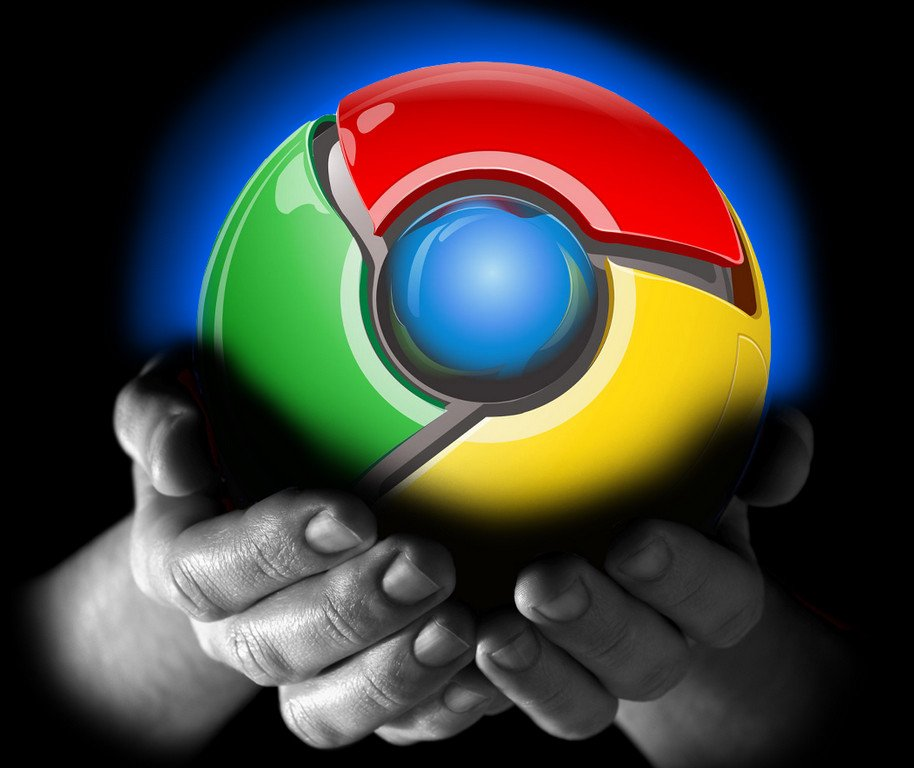
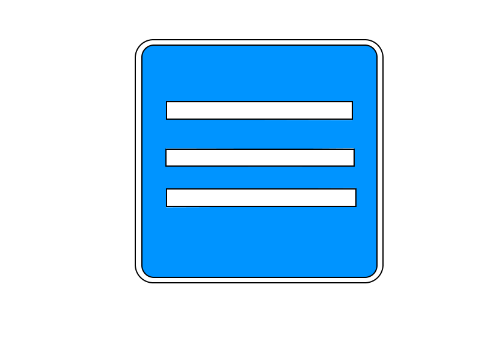
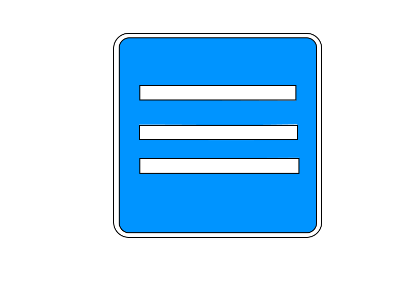

Для многих не секрет что удобные сверхнавороченные браузеры вредны не только тем что требуют для бесперебойной работы много оперативной памяти.
Они собирают твою личную информацию и выкладывают на всеобщее обозрение (в переносном смысле конечно). И какие бы мы не ставили навороченные антивирусники и программы
на свой ПК поможет только замена браузера. Конечно если вы не особо что либо скрываете, и к вашему компьютеру не привязана банковская карта, то вам эта статья не особо нужна.
А для остальных я посоветую следующее:



 
